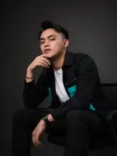
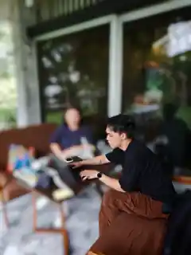

Positioning
Clarify what your founder should be known for.
Founder Content Strategy Consultant Malaysia
Strategic content direction for founders who already invest in content, but need stronger positioning and business impact.
Request Diagnosis ↗
The problem
A good camera can make the wrong idea look expensive. It cannot make it worth watching.
Your team is waiting for direction.
Views arrive, but business does not.
Every post starts from zero again.
You are producing more than you are learning.
What we do
Clarify what your founder should be known for.
Read what your market is paying attention to.
Turn priorities into angles and briefs your team can execute.
Use performance as evidence for the next round.
In the field

Strategy led by Leeroy Wong
Leeroy's track record crosses platforms, formats and audiences. Today, his strongest public content footprint is on TikTok, where Malay-language social experiments and human stories have grown into a community of nearly 295K followers. The value is not loyalty to one format, but knowing how to adapt the idea when the audience and platform change.
Selected creator archive
Years spent creating, testing formats and working in front of and behind the camera shaped the point of view behind SIGNAL.
The advisory cycle
We review your business and content, set a clear direction, brief your existing team, then use audience response to sharpen the next round.
Who this is for
Established business or professional practice.
Existing videographer, editor, freelancer or agency.
Founder willing to be visible.
Content investment starts from RM3,000 per month.
Private Content Diagnosis
We review fit first. Qualified applications are invited to a private strategy conversation.